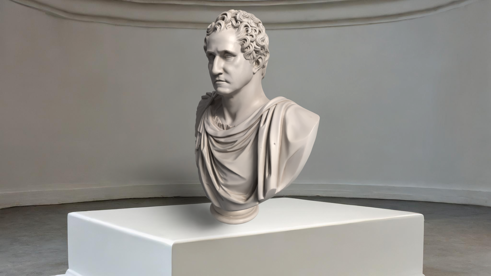
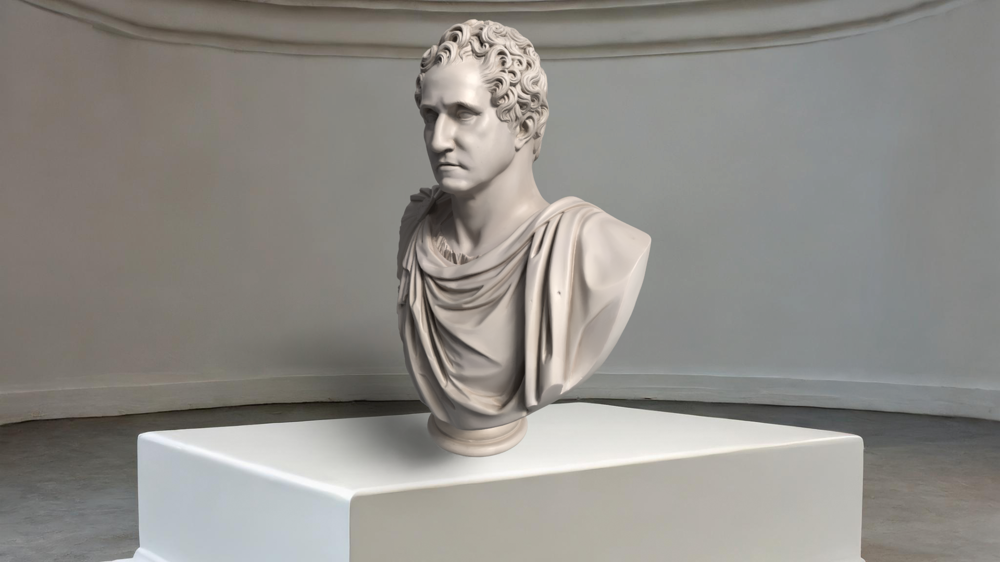

About Us
Step into the world of history and artistry with our Presidential Portraits collection. This digital gallery offers an immersive exploration of the iconic representations of U.S. presidents, featuring 3D scans, high-resolution images, and detailed information about each portrait. From the classical brushstrokes of early leaders to contemporary interpretations, the collection celebrates the intersection of art, politics, and culture. Dive into the stories behind each portrait—how they were created, their historical significance, and their role in shaping the visual legacy of leadership in America. Whether you're an art enthusiast, history buff, or student, this collection provides a unique opportunity to engage with the figures who have defined the nation's history in a profoundly personal and creative way. Discover the artistry, symbolism, and evolving traditions of presidential portraiture, and gain a deeper appreciation for the narratives these artworks tell about the nation's past, present, and future.


 
